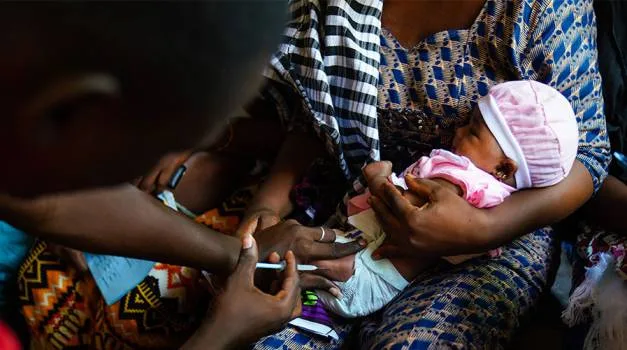

Expanded Nursing Uganda Explanation
Immunization Schedule should be reviewed through safe maternal and newborn assessment, early recognition of danger signs, respectful communication and timely referral. Connect the definition to vital signs, bleeding, fetal or newborn wellbeing, patient education and local protocol requirements.
Contents, 33 sections (tap to expand)
01 The Uganda National Expanded Programme on Immunization (UNEPI)
The Uganda National Expanded Programme on Immunization (UNEPI) , officially launched in October 1993, was established to address critical challenges in immunization services. These included low immunization coverage, the use of non-potent vaccines, inadequate skills among health workers, limited community participation, and a lack of regular monitoring and evaluation. The re-launch of the program in 1997 marked a significant turning point, leading to great improvements in routine immunization coverage and a reduction in the incidence of Vaccine Preventable Diseases (VPDs) like measles.
02 UNEPI Strategic Objectives
The core objectives that guide UNEPI's work are:
- To formulate and update national immunization policy, standards, and guidelines .
- To ensure a consistent and reliable supply of potent and effective vaccines .
- To increase both access to and demand for immunization services from the community.
- To build technical and management capacity for the immunization program at all levels of the health system.
- To continuously monitor disease trends and program performance to guide actions.
03 UNEPI Strategies
To achieve its objectives, UNEPI employs a multi-faceted approach:
- Service Delivery: Providing routine immunization through the national health delivery system, including static (at the facility) and outreach services.
- Logistics: Providing and maintaining an effective cold chain and logistics system at all levels.
- Communication: Improving the communication skills of health workers to effectively engage with parents, leaders, and communities.
- Supervision: Strengthening technical and administrative support supervision to ensure quality.
- Training: Providing technical guidance for both pre-service training of health workers and continuous on-the-job training.
- Partnerships: Strengthening partnerships with other child health programs, NGOs, civil society, religious organizations, and the private sector.
- Advocacy & Social Mobilization: Enhancing public education and community involvement to increase vaccine uptake.
- Injection Safety: Promoting and ensuring safe injection practices and proper waste management.
- Surveillance: Maintaining a robust surveillance system for vaccine-preventable diseases using the Integrated Disease Surveillance and Response (IDSR) approach.
- AEFI Management: Promoting the monitoring, investigation, and management of Adverse Events Following Immunization (AEFI).
- Supplemental Activities: Carrying out mass vaccination campaigns (Supplemental Immunization Activities - SIAs) against targeted diseases as needed.
- Innovation: Adopting internationally recommended approaches like Reaching Every District/Reaching Every Child (RED/REC) and developing strategies to reach hard-to-reach populations.
- Disease Control Goals: Strengthening specific disease control measures, including for measles, maternal and neonatal tetanus elimination, and polio eradication.
04 Central Level (UNEPI and National Medical Stores)
- UNEPI: Policy and guideline formulation, strategic planning, resource mobilization, technical support and supervision, capacity building, and national monitoring and evaluation.
- National Medical Stores (NMS): Procurement, storage, and distribution of vaccines, injection materials, and other logistics to the district level.
05 District Level
- Implementation of national policies and plans.
- Forecasting, ordering, and storing vaccines and logistics.
- Distribution of supplies to lower-level health facilities.
- Cold chain maintenance and repair.
- Support supervision and on-the-job training for health facility staff.
- Monitoring performance data (e.g., coverage, dropout rates, vaccine wastage) for action.
- Conducting active surveillance for diseases like Acute Flaccid Paralysis (AFP), Neonatal Tetanus (NNT), and measles.
06 Health Facility Level (The Frontline)
This is where nurses and midwives play their most direct role.
- Providing daily immunization services (static and outreach).
- Counseling and health-educating parents/caretakers.
- Screening every child visiting the facility for their immunization status to reduce missed opportunities.
- Estimating vaccine needs, ordering, and storing them correctly.
- Maintaining the vaccine refrigerator temperature between +2°C and +8°C and recording it twice daily.
- Monitoring and reporting performance data (coverage, wastage, dropouts).
- Tracking defaulters through home visiting and community engagement.
- Working with community mobilizers like Village Health Teams (VHTs).
- Ensuring safe injection practices and proper disposal of sharps in a safety box.
07 Community Level (VHTs, Parents/Caregivers)
- Taking children for all scheduled immunizations and ensuring completion.
- Participating in planning for outreach services.
- Mobilizing other parents and community members for immunization.
- Keeping the child's health card safe and presenting it at every health facility visit.
08 The Uganda National Immunization Schedule
The immunization schedule is the standard plan that guides all health workers in the country. It details the vaccines, doses, intervals, and administration sites. This schedule can change over time based on epidemiological data and new scientific discoveries.
- Visit/Contact When it is Given (Age) Vaccine Given & Dose Disease(s) Prevented How it is Given (Route and Site)
- 1 st AT BIRTH (Within 24 hours is best) Oral Polio Vaccine 0 (OPV0) Polio 2 Drops in the mouth (Oral)
- BCG Tuberculosis (severe forms like TB meningitis) 0.05ml Injection on right upper arm (Intradermal)
- Hepatitis B (Birth Dose) Hepatitis B (prevents mother-to-child transmission) Injection on left upper thigh (Intramuscular)
- Injectable Polio Vaccine (IPV1) Polio Injection on right upper thigh (Intramuscular)
- 2 nd AT 6 WEEKS (One and a half months) Pentavalent 1 (DPT-HepB-Hib 1) Diphtheria, Pertussis (Whooping cough), Tetanus, Hepatitis B, Haemophilus influenzae type B Injection on left upper thigh (Intramuscular)
- Pneumococcal Conjugate Vaccine (PCV1) Meningitis and Pneumonia (caused by S. pneumoniae) Injection on right upper thigh (Intramuscular)
- Rotavirus vaccine 1 Diarrhoea caused by Rotavirus Slow release into the mouth (Oral)
- Oral Polio Vaccine 2 (OPV2) Polio 2 Drops in the mouth (Oral)
- 3 rd AT 10 WEEKS (Two and a half months) Pentavalent 2 (DPT-HepB-Hib 2) Diphtheria, Pertussis, Tetanus, Hepatitis B, Haemophilus influenzae type B Injection on left upper thigh (Intramuscular)
- Pneumococcal Conjugate Vaccine (PCV2) Meningitis and Pneumonia Injection on right upper thigh (Intramuscular)
- Rotavirus vaccine 2 Diarrhoea caused by Rotavirus Slow release into the mouth (Oral)
- Injectable Polio Vaccine (IPV2) Polio Injection on right upper thigh (Intramuscular)
- 4 th AT 14 WEEKS (Three and a half months) Pentavalent 3 (DPT-HepB-Hib 3) Diphtheria, Pertussis, Tetanus, Hepatitis B, Haemophilus influenzae type B Injection on left upper thigh (Intramuscular)
- Pneumococcal Conjugate Vaccine (PCV3) Meningitis and Pneumonia Injection on right upper thigh (Intramuscular)
- Rotavirus vaccine 3 Diarrhoea caused by Rotavirus Slow release into the mouth (Oral)
- 5 th At 6 months Malaria Vaccine 1 Malaria Injection on right upper arm (Intramuscular)
- 6 th At 7 months Malaria Vaccine 2 Malaria Injection on right upper arm (Intramuscular)
- 7 th At 8 months Malaria Vaccine 3 Malaria Injection on right upper arm (Intramuscular)
- 8 th AT 9 MONTHS Measles-Rubella vaccine 1 Measles, Rubella Injection on left upper arm (Subcutaneous)
- Yellow Fever vaccine Yellow Fever Injection on right upper arm (Subcutaneous)
- 9 th AT 18 MONTHS Measles-Rubella vaccine 2 Measles, Rubella Injection on left upper arm (Subcutaneous)
- Malaria Vaccine 4 Malaria Injection on right upper arm (Intramuscular)
- Single dose 10 Year old girls Human Papilloma Virus (HPV) Vaccine Cancer of the cervix Injection on the upper arm (Intramuscular)
- TETANUS-DIPHTHERIA (Td) FOR WOMEN OF CHILDBEARING AGE (15-49 years)
- Td1 At first contact or as early as possible in pregnancy Tetanus Diphtheria (Td) Vaccine Tetanus, Diphtheria in the mother; Prevents Neonatal Tetanus in the baby Injection on the upper arm (Intramuscular)
- Td2 At least 1 month after Td1
- Td3 At least 6 months after Td2
- Td4 At least 1 year after Td3
- Td5 At least 1 year after Td4
09 BCG (Bacillus Calmette-Guérin) Vaccine
This is a live attenuated (weakened) bacterial vaccine. It is used in the immunization program to protect the child against tuberculosis. BCG is given in a single dose at birth or first contact. The vaccine is very sensitive to light and loses much of its potency when exposed to light. It is given by injecting the child in the skin (intradermally) at the right upper arm. The amount of 0.05 ml is recommended for children up to eleven (11) months of age, and 0.1 ml for children after eleven years.
10 Polio Vaccine
Polio vaccine is a live attenuated virus vaccine used in the immunization program to protect the child against poliomyelitis. The Sabin type is given orally (by mouth) in Uganda. Some countries use another type called Salk vaccine, which is given by injection.
Oral polio vaccine is given four times beginning:
- at birth (polio 0);
- at 6 weeks polio 1;
- at 10 weeks polio 2, and
- at 14 weeks polio 3 respectively.
2 drops in the mouth are recommended for each dose. It should be noted that booster doses are sometimes given to all children below five years of age in the entire country regardless of immunization status. This is done during national immunization days (NIDs), whose primary objective is to eradicate poliomyelitis. It is nice to remember that polio vaccine is made up of three polio viruses, and the oral polio vaccine is given four times to enable each of three viruses to stimulate the production of antibodies.
11 Pentavalent Vaccine
Pentavalent vaccine has 5 vaccines which include DPT and Hep.b & Hib. The DPT vaccine is commonly referred to as a triple vaccine because it is used to prevent three diseases, namely diphtheria, pertussis, and tetanus. The diphtheria and tetanus parts of the vaccine are made from the respective toxins, while the pertussis vaccine is made of killed bacterial antigen. It has become necessary to add hepatitis B and haemophylus influenza type b vaccines to DPT to form what is now known as the Pentavalent vaccine (five vaccines).
These are given three times because they do not stimulate the body to produce antibodies as well as the live attenuated vaccines. When the second and the third dose are given, the body’s memory of the earlier dose quickly leads to the production of more antibodies. The Pentavalent vaccine is given by injecting the child intramuscularly (in the muscle) at the left upper thigh.
It is given three times beginning:
- at 6 weeks,
- at 10 weeks, and
- at 14 weeks, respectively.
A dose of 0.5 ml is recommended each time given.
12 Tetanus Toxoid Vaccine
This is a toxoid vaccine used in the immunization program to prevent children against neonatal tetanus. UNEPI targets all women of childbearing age (15-49 years) and pregnant mothers for tetanus toxoid (TT) vaccination. It is better and safe to give two doses of TT vaccine to any pregnant woman if you are not sure she has had TT in a previous pregnancy. The aim is to use the TT vaccine to provide passive immunity for unborn babies, through the transfer of the mother’s antibodies. This type of immunity reduces with time and is normally boosted by giving the child Pentavalent vaccines at 6 weeks after birth.
13 Pneumococcal Conjugate Vaccine (PCV 10)
PCV 10 consists of sugars (polysaccharides) from the capsule of the bacterium streptococcus pneumonia, which are conjugated to a carrier protein.
The PCV 10 contains serotypes 1, 4, 5, 6B, 7F, 9V, 14, 18C, 19F, and 23F. It is highly effective and protects children younger than 2 years of age against severe forms of pneumococcal disease, such as meningitis, pneumonia, and bacteremia. It will not protect against these conditions if they are caused by agents other than pneumococcus or pneumococcal serotypes not present in the vaccine.
The World Health Organization and Ministry of Health recommend that infants be given three doses of PCV vaccine, at 6 weeks, 10 weeks, and 14 weeks. PCV should be integrated with DPT-HepB-Hib vaccination.
14 Rotavirus Vaccine
Rotavirus vaccine is a vaccine used to protect against rotavirus infections. These viruses are the leading cause of severe diarrhea among young children. The vaccines are safe. This includes their use in people with HIV/AIDS. The vaccines are made from weakened rotavirus.
The World Health Organization recommends the first dose of vaccine be given right after 6 weeks of age. Two or three doses more than a month apart should be given, depending on the vaccine administered. The vaccine is not recommended for use in children over two years of age.
15 Malaria Vaccine (RTS,S/AS01)
The malaria vaccine, known by its brand name Mosquirix™, is a landmark achievement in public health. It is a recombinant protein-based vaccine that targets the Plasmodium falciparum parasite, the most deadly species causing malaria in Africa. It works by preventing the parasite from infecting the liver and maturing, thus stopping the disease before it can cause symptoms. It is given in a four-dose schedule starting at 6 months of age, with subsequent doses at 7, 8, and 18 months. It is administered as an intramuscular injection in the upper arm.
16 Human Papillomavirus (HPV) Vaccine
The HPV vaccine is a crucial tool for cancer prevention. It is a recombinant vaccine that protects against specific high-risk types of HPV that are responsible for the vast majority of cervical cancer cases. In Uganda, it is targeted at 10-year-old girls before they are likely to be exposed to the virus through sexual activity. Providing the vaccine at this age ensures the strongest possible immune response. It is administered as an injection in the upper arm.
17 Administration of Vaccines: General Principles
Immunization coverage should be high to reduce disease transmission. As health workers, we should aim to achieve immunization coverage of over 80%. All children should be immunized at every opportunity. There is no contraindication for immunization. If immunization is done daily, this improves immunization coverage. Children with minor illnesses should be immunized. The misconception that sick children should not be immunized should be discarded. Very sick children admitted to the hospital should be immunized on discharge. Malnourished children should also be immunized. The danger of vaccine of any given type to the malnourished child is much less than the infection itself. For children with HIV/AIDS, BCG can spread rapidly and thus should be treated as an opportunistic infection.
18 Preparing Vaccines
Vaccines used in the immunization program are in different forms. Some vaccines are in powder form and must be dissolved in the diluent supplied with them, while others come in liquid form and will not need a diluent. There is a need to prepare the vaccine before immunization.
- Preparing Polio Vaccine: To prepare this vaccine the following should be done: If a dropper is separate, attach it securely to the vial (bottle). Keep polio vaccine shaded from sunlight during the immunization session. Place the vial on a frozen icepack or place it in the sponge hole placed at the mouth of the vaccine carrier, which is provided for this purpose to maintain the temperature.
- Preparing BCG and Measles Vaccines: The following should be done: Use the diluent provided for each vaccine. The diluent should be cold, +4°C – +8°C. Use different 9 ml syringes for mixing measles and BCG vaccines. Draw up the full required amount of the diluent provided as per instruction on the vial. Draw and expel mixture back into the bottle three times or until the vaccine is mixed. Do not shake the vial. BCG and measles vaccines should be placed on a frozen icepack or use the sponge in the vaccine carrier for maintaining the correct temperature. Draw 0.5 ml of measles vaccine (recommended dosage). Draw 0.05 ml of BCG vaccine for babies up to 11 months old and 0.1 ml for babies above 11 months of age (recommended dose).
- Preparing DPT and TT: DPT and TT come in liquid form. You will not need to dissolve or mix them. Remove the metal top from the vial. Draw 0.5 ml into the sterile syringe. Remove bubbles. Keep the vaccine shaded from the light.
- Preparing PCV 10: Ensure availability of a clean vaccine carrier and a sponge. The vaccine carrier should be able to close tightly. Condition icepacks prior to packing vaccines in a vaccine carrier to prevent freezing of PCV, TT, and DPT-Hep B-Hib. On a table with a plastic sheet: – Vaccines, diluent, and droppers – Thermometer – Cotton swab in a clean container – Clean water in a clean container for cleaning injection sites – A tin of vitamin A and a pair of scissors – AD syringe and needles – Child health cards – Child register.
19 Important Points to Remember Before Administering
- Never take two vials of the same vaccine out of the vaccine carrier at the same time.
- Do not mix vaccines until mothers and children are present.
- Mix one vial of a particular vaccine at a time.
- Keep opened vials of polio, measles, and BCG vaccines on a frozen icepack or use the sponge in the vaccine carrier. Their temperature must be carefully maintained.
- Do not keep vials of DPT and TT vaccines directly on the frozen icepack.
- Open the vaccine carrier when necessary.
- NEVER SHAKE VACCINE VIALS!!!
After preparing vaccines, the next step is to administer them. Before administering vaccines, you should always remember the following important points:
- Use one sterile syringe and needle per vaccine (antigen) per child or mother.
- Avoid holding loaded syringes in your hand for long to avoid exposing the vaccine to heat or direct sunlight.
- Inform each parent what type of vaccine you are giving the child, the possible reactions to it, what to do about the reactions, and when to bring the child back for more immunization.
- Listen to parents and encourage questions.
- Remove any child’s clothes that are in your way when vaccinating.
- During immunization, ask the mother to hold the child firmly to restrict their movement during immunization.
- Administer the vaccine.
- Give specific health information about each vaccine.
20 Administration Techniques
- Administering BCG: Clean the skin with cotton wool soaked in clean water and let it dry.
- Hold the middle of the child’s upper right arm firmly with your left hand.
- Hold the syringe by the barrel with the millimeter scale upward and the needle pointing in the direction of the child’s shoulder. Do not touch the plunger.
- Point the needle against the skin, barrel turned up about 3 cm above the thumb. Gently insert its tip into the upper layer of the skin (intradermally).
- Make sure that the needle is in the skin (intradermally) and not under the skin. If the needle goes under the skin, take it out and insert it again. If you bend the needle, replace it with another sterile one.
- Holding the barrel with your index and middle finger, put your thumb on the plunger.
- Holding the syringe flat (parallel to the surface of the skin), inject the vaccine intradermally.
- If the vaccine is injected correctly into the skin, a wheal, with the surface pitted like an orange peel, will appear at the injection site. An indication that the vaccine has been injected incorrectly is that the plunger will move much more easily when the needle is injected under the skin than when it is injected in the skin. If there is no local reaction, re-immunize the child.
- Give the mother health information about BCG, i.e., in 7-9 days, a small sore will appear at the site where the injection was given. The sore might ooze a bit and will last for 6-8 weeks. Keep the baby’s arm clean with soap and water. Do not put dressing or medicine on the sore. The sore will not hurt and it will heal by itself.
- Change the syringe and needle after each vaccine and each child.
- Fill in the immunization tally sheet in the BCG section.
- Administer the next vaccine.
- Administering DPT Vaccine: Ask the mother to hold the child across her laps so that the front of the child’s thigh is facing upwards. Then ask her to hold the child’s legs from moving.
- Clean the site to be injected with a cotton swab moistened in clean water and let it dry.
- Place your thumb and index finger on each side of the place you intend to inject. Stretch the skin slightly.
- Quickly push the needle deeply into the muscle (intramuscular). Pull the plunger back; if there is blood in the syringe, withdraw the needle and discard the vaccine. Obtain a sterile syringe with a needle and new vaccine.
- If no blood appears in the syringe, inject 0.5 ml of vaccine.
- Withdraw the needle.
- Rub the injection spot quickly with a clean piece of cotton swab.
- Give health advice about DPT. Tell the mother that: DPT may cause some tenderness at the site which will go away after a few days, and may cause fever but it will subside in 24 hours.
- Fill the immunization tally sheet appropriately.
- Use another needle and syringe to vaccinate another child.
- Administering PCV Vaccine: Explain to the mother that the child is going to be given two types of vaccines in the form of injections. One will be given in the right and the other in the left thigh.
- Explain to the parent the disease prevented by the vaccine, the number of doses in order to achieve the protection, and reassure her that there is no danger in giving two injections in one visit.
- Explain to the mother the likely side effects and how to manage them, then wash hands with soap and water, drip dry.
- Open the vaccine carrier and pick one vial of PCV and quickly check the expiry date and status of the vial.
- Observe the vial content for unusual appearance and particles. If either is observed, the vial must be discarded.
- Shake the vaccine vial gently to obtain a uniform solution.
- Draw 0.5 ml of the vaccine from the vial using an AD syringe and return the partially used vial in a sponge in a vaccine carrier.
- Instruct the mother on how to hold the child for vaccine administration.
- Clean the right upper outer thigh with a swab soaked in water and administer the vaccine intramuscularly.
- Press the injection site firmly for a few seconds. Do not massage.
- Dispose of the used syringe and needle immediately into the safety box. Do not put swabs in the safety box. Do not recap the needle.
- If a vial is opened for one child and another child is not immediately available to be vaccinated with the remaining vaccine dose in the vial, write on the vial the time it was opened and ensure that the vial is kept cool in the sponge pad and away from any potential contamination for 6 hours.
- Administering Oral Polio: Ask the child’s mother whether the child has diarrhea. If yes, note this on the child’s card and tell the mother that this dose of polio needs to be repeated after one month. This child with diarrhea should have a total of 4-9 doses of polio vaccine depending on whether the child got polio 0 or not.
- Use the dropper or device supplied with the vaccine.
- If the child will not open the mouth, gently squeeze his/her cheeks to open his mouth.
- Put 2 drops of vaccine on the child’s tongue.
- Fill in the immunization tally sheet appropriately.
- Note that every child below 5 years of age should receive an extra 2 doses of oral polio vaccine (OPV) each year during national immunization days (NIDs), whether she/he was immunized before or not.
- Administering Measles: Use a sterile syringe and needle for each injection. Draw 0.5 ml dose of mixed measles vaccine.
- Ask the mother to expose the child’s left outer upper arm and hold the child firmly to restrict their movement.
- Clean the injection site with a cotton swab soaked in clean water and let it dry.
- With the fingers of one hand, pinch the skin on the outer side of the upper arm.
- Hold the syringe at an acute angle to the child’s arm. Inject the vaccine subcutaneously.
- To avoid injecting the vaccine into a vein, withdraw the plunger slightly before injecting the vaccine. Never give the vaccine if blood is seen in the syringe.
- Press the plunger gently, inject 0.5 ml of vaccine.
- Withdraw the needle. If a drop of blood appears at the injection site, ask the mother to wipe it away with a piece of cotton wool.
- If blood is drawn back in the syringe, the vaccine should not be given. Use another needle and syringe to obtain new vaccine.
- Record the immunization in the immunization tally sheet.
- Administering TT Vaccine: Pregnant mothers should be given two doses of TT vaccine (0.5 ml) a month apart. However, if it is not possible to establish whether the mother had previously been immunized with TT or whether the mother was a default from a previous dose, two doses should be given a month apart.
- Use a sterile syringe and needle for each injection.
- Clean the thigh with cotton wool moistened in clean water.
- Hold the thigh muscle between your thumb and forefinger.
- With your other hand, inject the vaccine intramuscularly.
- Withdraw the needle.
- Discard the needle and syringe into a safety box. Ensure you do not put swabs in the safety box. Safety boxes are collected and burned.
- Fill the immunization tally sheet.
21 Equipment/Logistics Needed for Safe Vaccination
A well-prepared immunization session requires specific equipment to ensure vaccines are kept potent and administered safely.
- Vaccine Carrier with Conditioned Ice Packs: A portable, insulated container to maintain the cold chain during an immunization session.
- Foam Pad/Sponge: A slotted sponge placed in the top of the vaccine carrier to hold opened multi-dose vials and protect them from heat and direct sunlight.
- Vaccines and their specific Diluents: The correct vaccines and diluents for the session.
- Syringes and Needles: Including single-use Auto-Disable (AD) syringes and separate mixing syringes.
- Safety Box (Sharps Container): A puncture-proof container for the immediate and safe disposal of used needles and syringes.
- Cleaning Supplies: Cotton swabs and a bottle of clean water for cleaning injection sites.
- Documentation Tools: Child health cards, immunization register, and tally sheets.
- Supplemental Supplies: Vitamin A capsules and a pair of scissors to open the blister packs.
- Cold Boxes and Ice Packs: Larger insulated containers used for transporting vaccines from a district store to a health facility.
22 Post-Vaccination Counselling and Health Education
Communication with the parent or caregiver after vaccination is a critical nursing role. It builds trust and ensures proper follow-up care.
- Reassure parents of the vaccine's safety and explain the common, minor side effects, such as swelling and redness at the injection site, slight fever, or soreness.
- Advise parents on how to manage these side effects (e.g., giving paracetamol for fever).
- Offer integrated health education on topics like nutrition, hygiene, and the importance of breastfeeding.
- Always ask mothers if they have any concerns and take the time to answer their questions respectfully.
- Clearly inform the mother about the date of the next visit required for immunization.
- Administer Vitamin A supplementation to children according to the national schedule (e.g., at 6 months and 12-59 months). If a child receives their first measles dose at 6 months, inform the mother the second dose is due at 18 months.
23 Record Keeping: The Foundation of Program Monitoring
Accurate record keeping is mandatory for the immunization program. All vaccines administered must be recorded in tally sheets and registers to monitor performance, check a child's immunization status, calculate coverage rates, and plan for future needs.
24 The Immunization Register
- The register must be clearly labeled with the name of the health facility.
- It should include the names of the children (not parents), their date of birth, and their medical file/card number.
- For each vaccine (BCG, Polio, Pentavalent, Measles, etc.), enter the date the dose was given. If a dose was missed or not given, it should be clearly indicated, often with a zero (0).
- Note: Supplemental doses like extra OPV or Vitamin A given during campaigns are typically recorded on the child's health card, not in the main immunization register.
25 Health Cards
- Each child must have their own health card.
- The card must contain essential identifying information: child’s name, mother’s name, date of birth, village, and the primary health unit.
- It serves as the child's personal record of all vaccines received, including dates. Other health information, like Vitamin A administration, is also recorded here.
- Always ensure the child’s card is up-to-date before administering any vaccine.
26 The Vaccine Refrigerator
The refrigerator is the most critical piece of equipment for storing vaccines at the health facility. It must be properly maintained and kept in good working condition at all times. All refrigerators must be maintained at a temperature between +2°C and +8°C .
- Solar direct drive (SDD) vaccine refrigerator.
- Gas refrigerators (using Kerosene or paraffin).
- Electric vaccine refrigerator.
The refrigerator should also be able to freeze ice packs. These ice packs are used to keep vaccines cool in vaccine carriers during outreach sessions. Ice packs inside a vaccine carrier are referred to as Conditioned Icepacks .
27 Preventive Maintenance and Repair
All refrigerators should be serviced and maintained regularly (e.g., every 3 months). During maintenance, the following activities are done:
- The refrigerator is cleaned thoroughly.
- The thermostat setting is checked for accuracy.
- The defrosting system is checked.
- The cooling system and compressor are checked and cleaned.
- The electrical connection or gas/kerosene system is checked.
28 Managing Adverse Events Following Immunization (AEFI)
An AEFI is any untoward medical occurrence which follows immunization and does not necessarily have a causal relationship with the use of the vaccine. It is important to respond appropriately to any AEFI.
- Fever: Advise parents to give the child paracetamol (acetaminophen) in the correct dose for their weight. Do not give aspirin to children. Encourage plenty of fluids.
- Swelling or Redness at the Site of Injection: This is usually a normal, mild reaction. Reassure the parent it will go away on its own. Do not give any drug or apply any substance to the site.
- Swelling of the Limbs or Face, or Difficulty in Breathing: This is a sign of a potential severe allergic reaction and is a medical emergency. Do not give any drug. Advise the parent to seek medical attention at the nearest health facility immediately.
- Loss of Weight, Generalized Body Swelling, Poor Feeding, or Coughing: These are unlikely to be side effects of vaccination and are more likely symptoms of an underlying condition like malnutrition or another illness. Refer the child to the health facility for assessment and treatment.
- Diarrhea: This is most likely not related to vaccination. Ensure the child receives oral rehydration solution (ORS) or other appropriate fluids to prevent dehydration.
29 Conducting Mass Vaccination Campaigns
Mass vaccination campaigns, such as National Immunization Days (NIDs) or outbreak responses, require careful planning and execution.
- Planning and Training: Plan the campaign, identify target populations, and train healthcare workers on all procedures.
- Community Mobilization: Inform communities well in advance about the campaign's purpose, date, and location.
- Logistics: Ensure all necessary equipment (vaccines, syringes, safety boxes, cold chain equipment) is in place.
- Safety Measures: Implement infection control, safe waste disposal, and crowd control measures at vaccination sites.
- Vaccination Site Setup: Organize sites for an efficient flow of people from registration to vaccination to a post-vaccination observation area.
- Vaccine Administration: Follow standard procedures, ensuring one sterile syringe and needle per injection.
- Monitoring and Reporting: Monitor the campaign’s progress, track doses administered, and ensure AEFIs are reported and managed promptly.
- Documentation: Maintain detailed records of all vaccines administered, including tallies and vaccine wastage.
- Post-Campaign Evaluation: Evaluate the campaign’s success and identify areas for improvement.
- Follow-Up: After the campaign, ensure routine immunization services continue and that children receive follow-up doses as needed.
30 Nursing Uganda Clinical Lens
Use Immunization Schedule as a practical nursing topic, not only a memorized definition. Link cause, transmission, incubation, clinical features, treatment support and prevention.
- What to understand first: define immunization schedule, identify the normal or expected pattern, then explain what changes when the patient is unwell.
- Why it matters in care: the nurse must recognize risk early, explain findings clearly, document accurately and know when to escalate.
- How to revise it: connect each point to assessment, nursing diagnosis or care problem, intervention, rationale and evaluation.
31 Assessment Guide
- Temperature, pulse, respiratory status, hydration, pain, rash, wounds, stool, urine or sputum changes.
- Exposure history, travel, contacts, vaccination status and comorbidities.
- Specimen orders, isolation needs, antimicrobial history and danger signs.
32 Nursing Priorities, Rationales and Outcomes
- Use standard precautions and transmission-based precautions where needed.
- Support hydration, nutrition, medicines, monitoring and early referral for severe disease.
- Teach prevention, adherence, hygiene, safe water, vector control or contact tracing as relevant.
The rationale for these priorities is patient safety: nursing actions should prevent deterioration, reduce discomfort, support recovery and create clear evidence for the next caregiver.
- Expected outcome: Symptoms improve, complications are detected early, transmission risk is reduced and treatment is completed correctly.
33 Patient Teaching and Revision Check
- Explain immunization schedule in simple language the patient or caregiver can repeat back.
- Teach warning signs, medicine or follow-up instructions, hygiene or lifestyle points where relevant.
- For exams, prepare a short answer using: definition, causes or risk factors, signs, assessment, management, complications and prevention.
- For ward practice, document baseline findings, actions taken, patient response and the plan for review.
Illustrations and Diagrams (4)



Related Video Lectures
Watch nursing lecture videos on YouTube for this topic. Opens in a new tab.
Watch on YouTubeExternal link: YouTube may use its own cookies and terms. Nursing Uganda is not affiliated with YouTube.